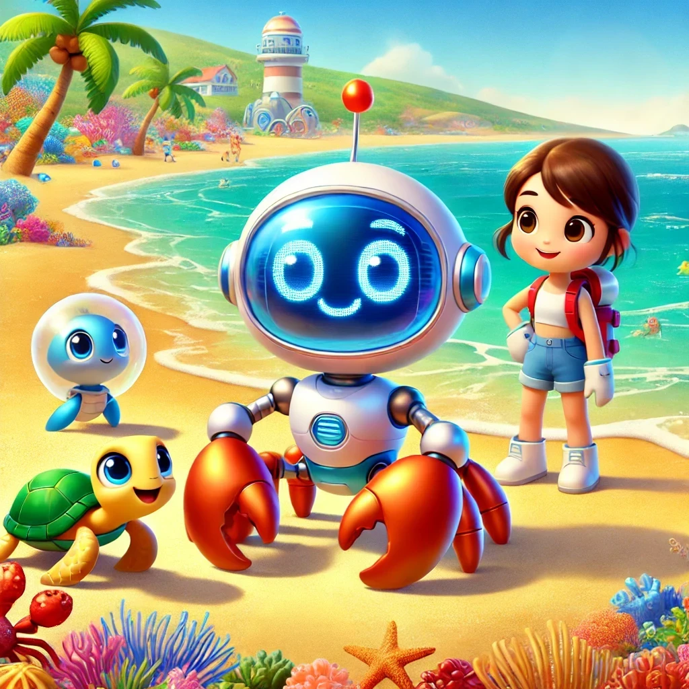

Crabby el Cangrejo

Había una vez, en una playa luminosa y llena de vida, un cangrejo robot llamado Crabby. Crabby era diferente de todos los otros cangrejos del lugar porque, en lugar de estar hecho de caparazón y pinzas, estaba construido con metal brillante y circuitos complejos. Aunque Crabby se movía y parecía un cangrejo normal, había una cosa que lo hacía único: no podía meterse al agua.
Crabby vivía en una pequeña cabaña construida con piezas recicladas y siempre observaba a los demás cangrejos y criaturas marinas desde la orilla. Soñaba con poder unirse a ellos y explorar el fondo del mar, pero sabía que si se mojaba, sus circuitos se estropearían y no podría moverse.
Un día, mientras Crabby estaba explorando la playa en busca de piezas para mejorar su cabaña, encontró a una pequeña tortuga llamada Tilly que se había quedado atrapada en una red de pesca. Tilly estaba muy asustada y pedía ayuda desesperadamente. Sin dudarlo, Crabby usó sus pinzas metálicas para cortar la red y liberar a Tilly.
Agradecida, Tilly le preguntó a Crabby por qué no se metía al agua como los demás cangrejos. Crabby le explicó su situación y cómo deseaba poder explorar el mar sin descomponerse. Tilly, conmovida por la historia de Crabby, decidió ayudarlo.
"Conozco a alguien que puede ayudarte," dijo Tilly. "Hay una inventora llamada Clara que vive cerca del puerto. Ella es muy hábil y puede encontrar una solución para que puedas entrar al agua."
Crabby, lleno de esperanza, siguió a Tilly hasta el taller de Clara. Clara, una joven inventora con un gran corazón y una mente brillante, escuchó atentamente la historia de Crabby. Decidida a ayudar, se puso a trabajar de inmediato.
Después de varias horas de trabajo, Clara diseñó y construyó un traje especial para Crabby, hecho de un material impermeable que protegía sus circuitos del agua. Con el traje puesto, Crabby podría sumergirse en el mar sin temor a descomponerse.
Con el traje nuevo, Crabby se adentró en el agua por primera vez. Se maravilló al ver el mundo submarino lleno de corales de colores, peces brillantes y plantas marinas que se mecían suavemente con las olas. Junto a Tilly, exploró cuevas submarinas y arrecifes, descubriendo la belleza y la magia del océano.
Crabby estaba feliz de haber encontrado amigos tan especiales y de poder finalmente cumplir su sueño de explorar el mar. Y así, vivió muchas aventuras bajo el agua, siempre agradecido por la ayuda de Tilly y Clara, quienes le mostraron que, con un poco de ingenio y amistad, cualquier obstáculo puede superarse.
Y colorín colorado, este cuento se ha acabado. Buenas noches, Alondra. ¡Dulces sueños!